See what is waiting and what went out (stop or resend a message)
In the office app, press Help and type see what is waiting and what went out
: the tour plays on your own screen, with your own data.
-
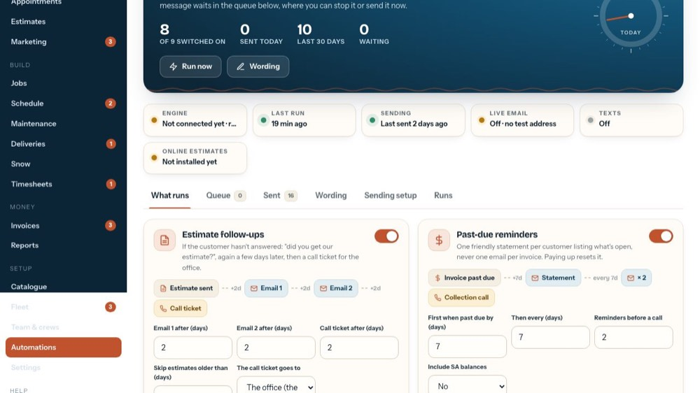
1Queue
Messages waiting to go.
-
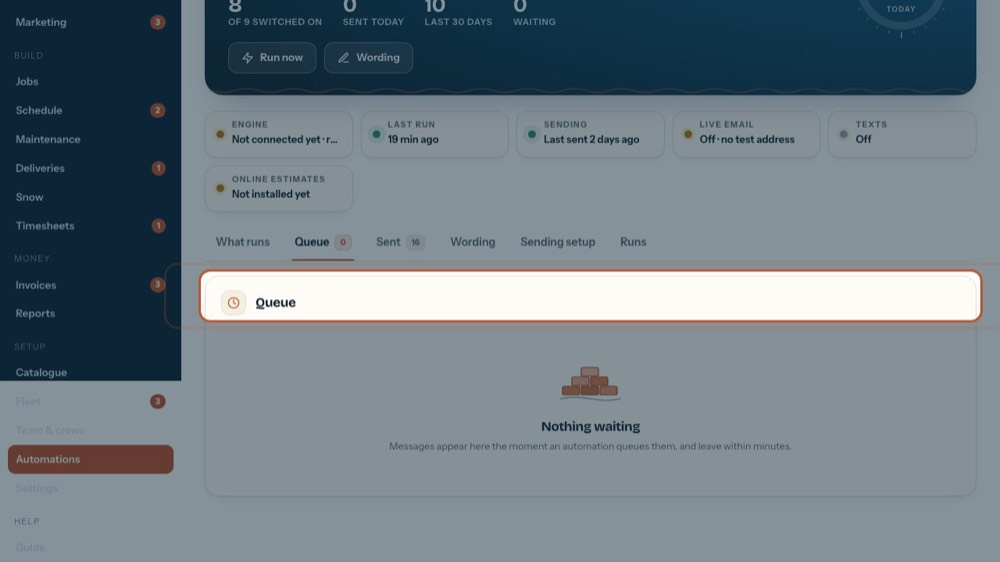
2Waiting to go
Each message, customer, subject and address, and when it goes. The eye shows it, the arrow sends it now, the x cancels it. If its reason goes away (paid, answered) it cancels itself.
-
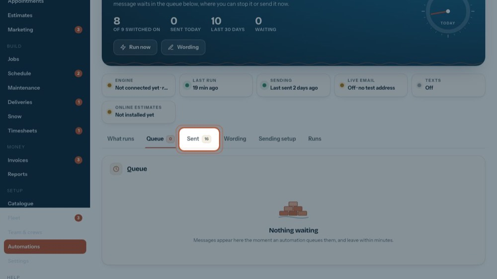
3Sent
What went out.
-
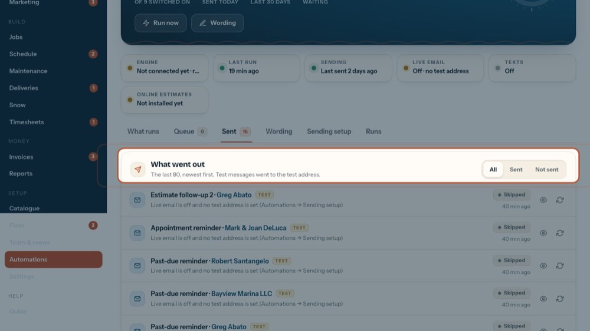
4What went out
The last 80 messages, newest first. Messages marked test went to the test address.
-
5
Not sent
The ones that failed, were cancelled or were skipped, with the reason.
-
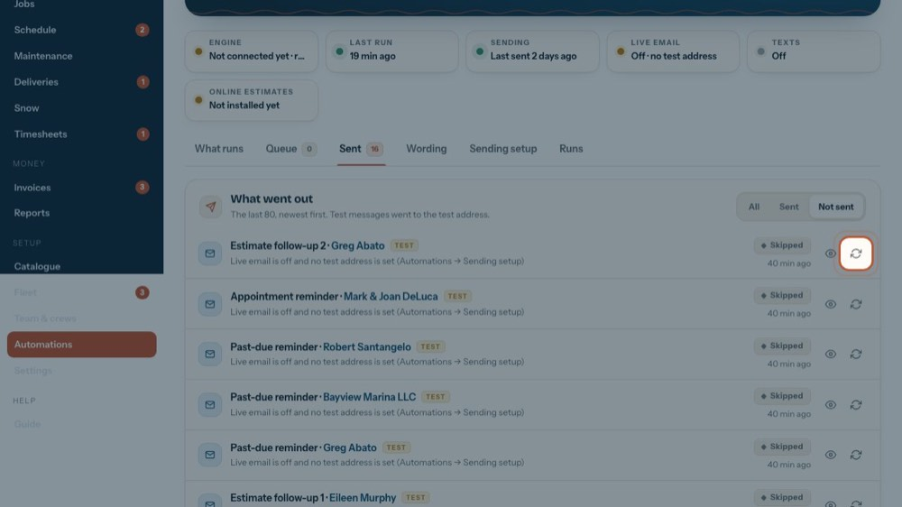
6Send again
Queues that message once more.
-
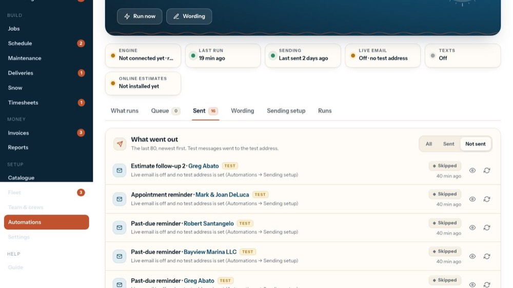
7Sent
Only the ones that went out.
-
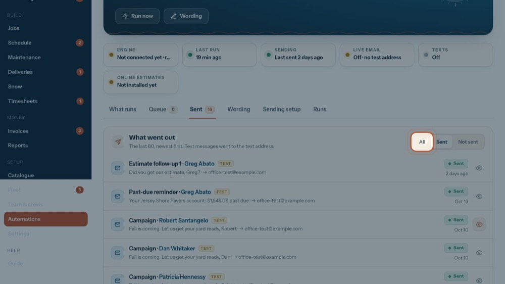
8All
Everything again.
-
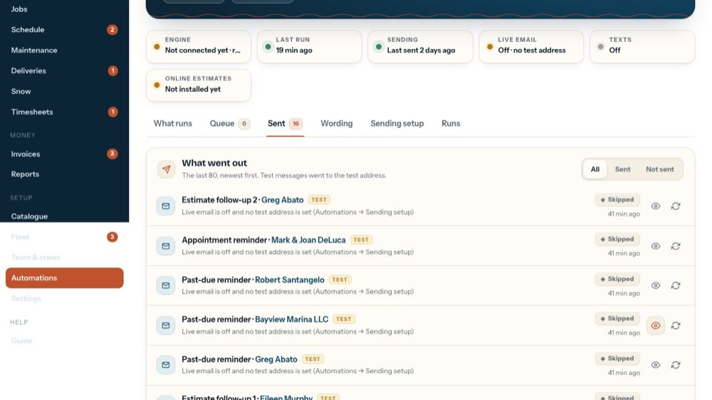
9The customer
The name opens the customer.
-
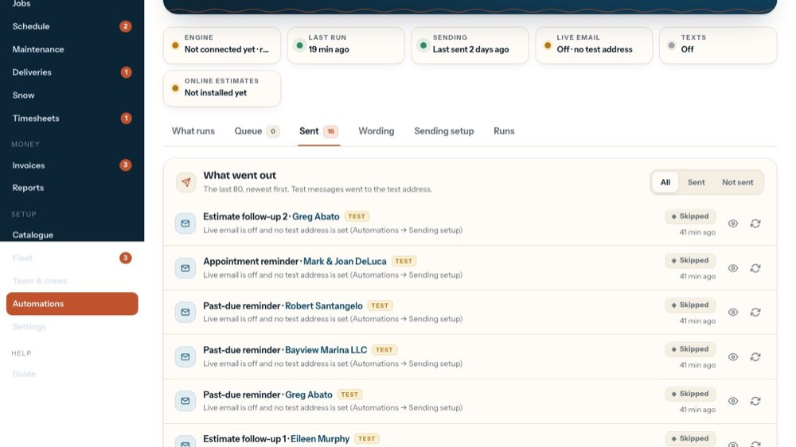
10View it
The eye shows the message.
-
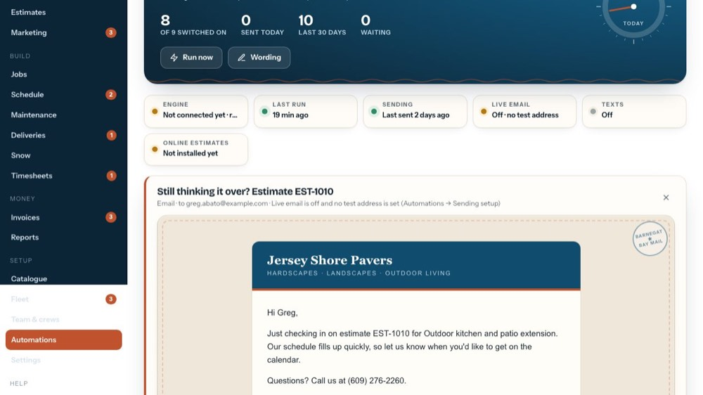
11The message
Its subject, who it went (or was meant) to and, if it didn't go, why. Below: the message itself.
-
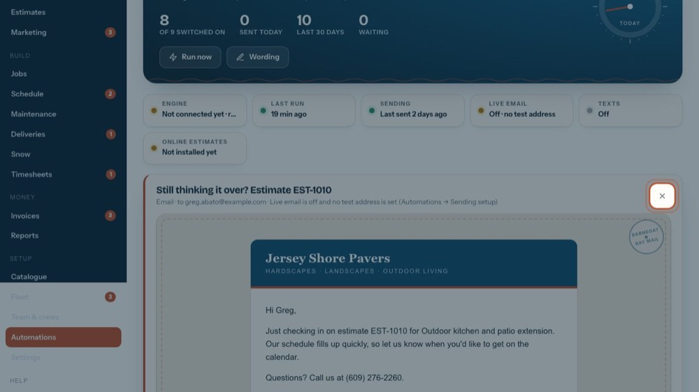
12Close it
The tour closes it.